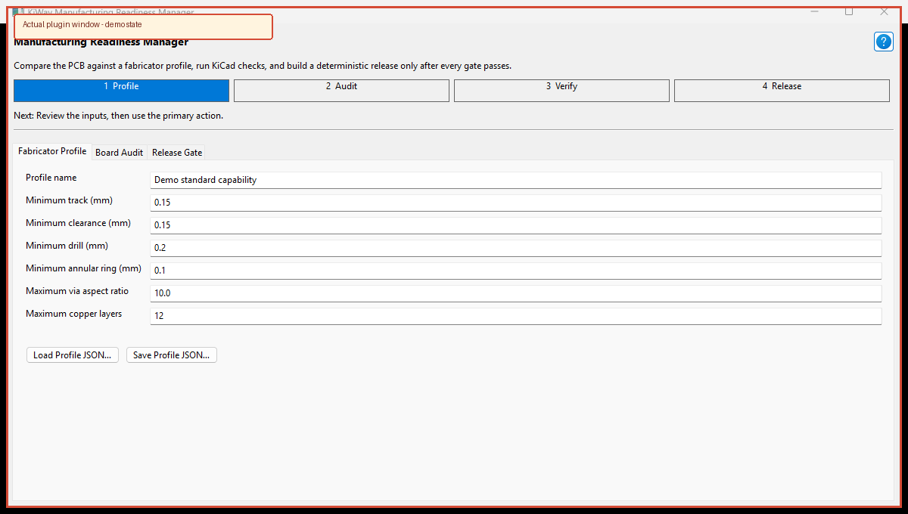

Packaging is blocked if a capability check fails. The source project is not modified.
The manager cannot infer contractual fabrication limits or certify the generated data. Confirm the current quotation, stackup, controlled impedance, material and finish requirements with the fabricator.